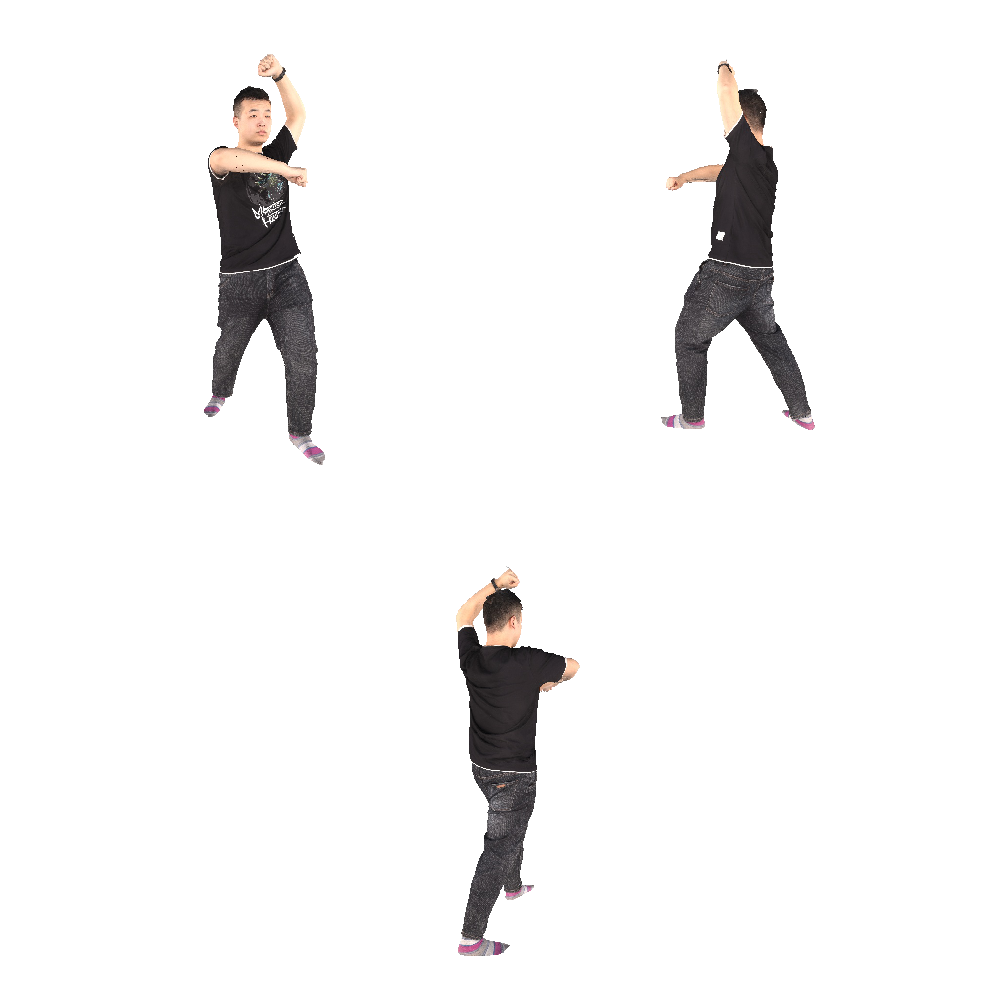
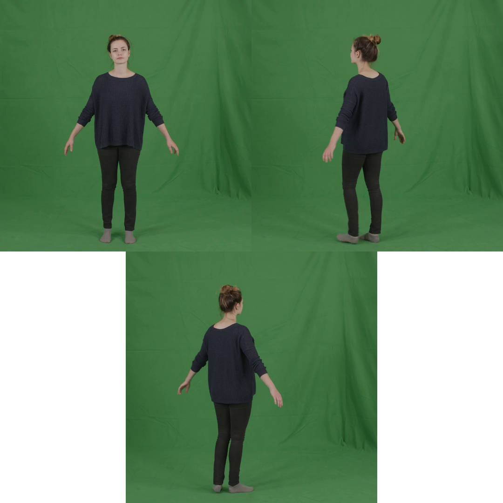
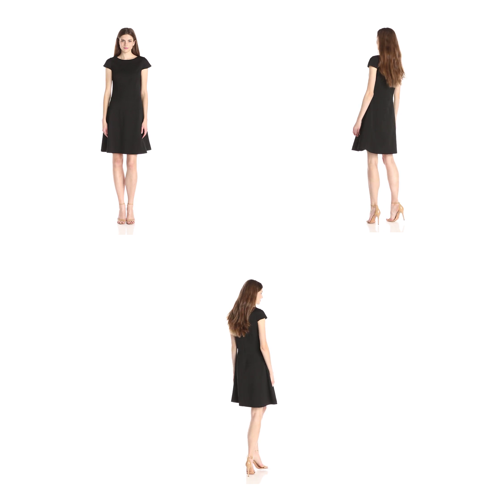

- University of Illinois at Urbana-Champaign
Motivation
(a) Sensitivity to input pose noises. Previous methods (e.g, GHG [1], LIFe-GoM [2]) take camera poses and human poses as inputs and they are sensitive to quality of the human poses. We quantitatively measure the sensitivity by injecting Gaussian noise of different standard deviations or using a predicted pose. (Averaged over 5 runs for Gaussian noise; std are multiplied by 3 for better visualization.) (b) Comparisons on rendering quality. With the predicted inaccurate input poses, LIFe-GoM cannot produce high-fidelity rendering. We propose to eliminate the need of input poses. Our methods, which does not take any poses as inputs, produce high-quality rendering.
[1] Kwon, Youngjoong, et al. "Generalizable human gaussians for sparse view synthesis." ECCV 2024.
[2] Wen, Jing, et al. "LIFe-GoM: Generalizable Human Rendering with Learned Iterative Feedback Over Multi-Resolution Gaussians-on-Mesh." ICLR 2025.
[2] Wen, Jing, et al. "LIFe-GoM: Generalizable Human Rendering with Learned Iterative Feedback Over Multi-Resolution Gaussians-on-Mesh." ICLR 2025.
Method
The reconstruction module reconstructs the canonical T-pose representation solely from images. It follows the encoder-decoder structure and consists of two types of branches: a template branch and image branches. We show two views of the predictions of each branch: the splatter images in the 2D format and their visualizations in 3D. Gaussians predicted from all branches are combined and fed into the articulation and rendering.

Novel view synthesis and qualitative comparisons
THuman2.0: 3 input views
LIFe-GoM requires the poses of the input images during test-time reconstruction. We compare to LIFe-GoM in two settings: 1) w/ ground-truth poses: the input poses are the ground-truths provided by the dataset; and 2) w/ predicted poses: the input poses are estimated with MultiHMR. Our approach does not require any poses as input during test-time reconstruction. We achieve comparable rendering quality to LIFe-GoM w/ ground-truth poses, and significantly outperform LIFe-GoM w/ predicted poses.
Ground truth
LIFe-GoM w/ ground-truth poses
LIFe-GoM w/ predicted poses
NoPo-Avatar (ours)
HuGe100K: single input view
We compare our approach to LHM-1B and IDOL on novel view synthesis (360 degree freeview rendering) from a single input image on HuGe100K. IDOL and ours are trained on HuGe100K. We directly use LHM's pretrained checkpoint without training it on HuGe100K, since the training codes of LHM are not available. All three methods do not take input poses in the reconstruction phase. We demonstrate that our method can render very loose clothes, such as long dresses.
Ground truth
IDOL
LHM-1B
NoPo-Avatar (ours)
Novel pose synthesis
Since the reconstructed human avatars are represented in the canonical T-pose, the avatars can be animated to novel poses with linear blend skinning and the predicted weights without any postprocessing. We show novel pose synthesis here.
THuman2.0: 3 input views

Source images
Reference poses
NoPo-Avatar (ours)
HuGe100K

Source images
Reference poses
NoPo-Avatar (ours)
Cross-domain generalization
We show cross-domain generalization to other datasets. The model is trained on THuman2.1 + HuGe100K. The model is not trained on any of the datasets shown on this section.
PeopleSnapshot
We use the predicted poses from the first input image as the target pose. Since the input images depict different human poses, they are not strictly multiview. Although our model is not trained on inputs with varying poses, it still performs reasonably well.

Source images
Ground truth
UBCFashion
We use the predicted poses from the first input image as the target pose. Since the input images depict different human poses, they are not strictly multiview. Although our model is not trained on inputs with varying poses, it still performs reasonably well.

Source images
Ground truth
Citation
If you find our project useful, please consider citing:AخA
@inproceedings{wen2025nopoavatar,
title={{NoPo-Avatar: Generalizable and Animatable Avatars from Sparse Inputs without Human Poses}},
author={Jing Wen and Alex Schwing and Shenlong Wang},
booktitle={NeurIPS},
year={2025}
}